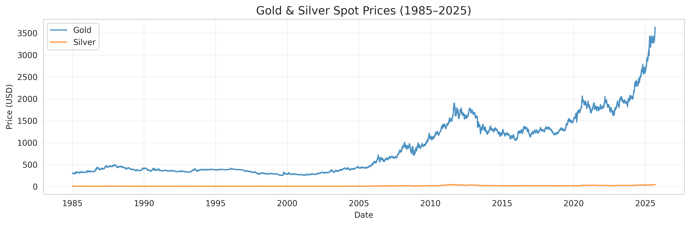

Project 1 · Quantitative Finance
Gold Price Forecasting with Geopolitical Risk (1985–2025)
This case study forecasts next-day gold prices using historical gold/silver prices and geopolitical risk indicators, then presents the model outputs through a Streamlit interface.
PythonXGBoostPandasStreamlitTime Series
